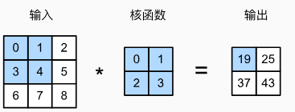

AI学习记录5
ketword:卷积、特诊
简介
卷积神经网络（convolutional neural network，CNN）是一类强大的、为处理图像数据而设计的神经网络。
卷积神经网络需要的参数少于全连接架构的网络，而且卷积也很容易用GPU并行计算。
因此卷积神经网络除了能够高效地采样从而获得精确的模型，还能够高效地计算。
接下来将介绍构成所有卷积网络主干的基本元素。包括卷积层本身、填充（padding）和步幅（stride）的基本细节、用于在相邻区域汇聚信息的汇聚层（pooling）、在每一层中多通道（channel）的使用，以及有关现代卷积网络架构的仔细讨论。
全连接到卷积
对于表格数据，我们寻找的模式可能涉及特征之间的交互，但是我们不能预先假设任何与特征交互相关的先验结构。 此时，多层感知机可能是最好的选择，然而对于高维感知数据，这种缺少结构的网络可能会变得不实用。
卷积神经网络能克服多层感知机的弱势，利用图像中本就拥有丰富的结构进行学习。
不变性
卷积神经网络将空间不变性（spatial invariance）的这一概念系统化，从而基于这个模型使用较少的参数来学习有用的表示。存在以下两个有益的概念：
- 平移不变性（translation invariance）：不管检测对象出现在图像中的哪个位置，神经网络的前面几层应该对相同的图像区域具有相似的反应，即为“平移不变性”。
- 局部性（locality）：神经网络的前面几层应该只探索输入图像中的局部区域，而不过度在意图像中相隔较远区域的关系，这就是“局部性”原则。最终，可以聚合这些局部特征，以在整个图像级别进行预测。
下面由多层感知机开始进行推导：
多层感知机的输入是二维图像$\mathbf{X}$，其隐藏表示$\mathbf{H}$在数学上是一个矩阵，在代码中表示为二维张量。
其中$\mathbf{X}$和$\mathbf{H}$具有相同的形状。
使用$[\mathbf{X}]_{i, j}$和$[\mathbf{H}]_{i, j}$分别表示输入图像和隐藏表示中位置（$i$,$j$）处的像素。
为了使每个隐藏神经元都能接收到每个输入像素的信息，我们将参数从权重矩阵（如同我们先前在多层感知机中所做的那样）替换为四阶权重张量$\mathsf{W}$。假设$\mathbf{U}$包含偏置参数，我们可以将全连接层形式化地表示为:
索引$a$和$b$通过在正偏移和负偏移之间移动覆盖了整个图像。
对于隐藏表示中任意给定位置（$i$,$j$）处的像素值$[\mathbf{H}]_{i, j}$，可以通过在$x$中以$(i, j)$为中心对像素进行加权求和得到，加权使用的权重为$[\mathsf{V}]_{i, j, a, b}$。
平移不变性
现在引用上述的第一个原则：平移不变性。
这意味着检测对象在输入$\mathbf{X}$中的平移，应该仅导致隐藏表示$\mathbf{H}$中的平移。即$\mathsf{V}$和$\mathbf{U}$（两个参数）实际上不依赖于$(i, j)$的值，即$[\mathsf{V}]_{i, j, a, b} = [\mathbf{V}]_{a, b}$。并且$\mathbf{U}$是一个常数，比如$u$。因此，我们可以简化$\mathbf{H}$定义为：
这就是卷积（convolution）。我们是在使用系数$[\mathbf{V}]_{a, b}$对位置$(i, j)$附近的像素$(i+a, j+b)$进行加权得到$[\mathbf{H}]_{i, j}$。
通过平移不变性，我们将$[\mathbf{V}]_{a, b}$转化为了$[\mathsf{V}]_{i, j, a, b}$，大大减少了系数数目
局部性
现在引用上述的第二个原则：局部性。如上所述，为了收集用来训练参数$[\mathbf{H}]_{i, j}$的相关信息，我们不应偏离到距$(i, j)$很远的地方。这意味着在$|a|> \Delta$或$|b| > \Delta$的范围之外，我们可以设置$[\mathbf{V}]_{a, b} = 0$。因此，我们可以将$[\mathbf{H}]_{i, j}$重写为
上式被称为一个卷积层（convolutional layer），而卷积神经网络是包含卷积层的一类特殊的神经网络。而$\mathbf{V}$被称为卷积核（convolution kernel）或者滤波器（filter），亦或简单地称之为该卷积层的权重，通常该权重是可学习的参数。
以前，多层感知机可能需要数十亿个参数来表示网络中的一层，而现在卷积神经网络通常只需要几百个参数，而且不需要改变输入或隐藏表示的维数。
参数大幅减少的代价是，我们的特征现在是平移不变的，并且当确定每个隐藏活性值时，每一层只包含局部的信息。
以上所有的权重学习都将依赖于归纳偏置。当这种偏置与现实相符时，我们就能得到样本有效的模型，并且这些模型能很好地泛化到未知数据中。但如果这偏置与现实不符时，比如当图像不满足平移不变时，我们的模型可能难以拟合我们的训练数据。
卷积
在数学上，卷积被定义为：
即卷积是当把一个函数“翻转”并移位$\mathbf{x}$时，测量$f$和$g$之间的重叠。当为离散对象时，积分就变成求和。例如，对于由索引为$\mathbb{Z}$的、平方可和的、无限维向量集合中抽取的向量，我们得到以下定义：
对于二维张量，则为$f$的索引$(a, b)$和$g$的索引$(i-a, j-b)$上的对应加和：
对比上式，主要区别是不是使用$(i+a, j+b)$，而是使用差值。但这仅是表面上的差异。
通道
事实上，图像一般包含三个通道/三种原色（红、绿、蓝），它并非二维张量，而是一个由高度、宽度和颜色组成的三维张量，比如包含$1024 \times 1024 \times 3$个像素。
前两个轴与像素的空间位置有关，而第三个轴可以看作每个像素的多维表示。
因此，我们将$\mathsf{X}$索引为$[\mathsf{X}]_{i, j, k}$。由此卷积相应地调整为$[\mathsf{V}]_{a,b,c}$，而不是$[\mathbf{V}]_{a,b}$。
同时，隐藏表示$\mathsf{H}$也采用三维张量。对于每一个空间位置，我们想要采用一组而不是一个隐藏表示。这样一组隐藏表示可以想象成一些互相堆叠的二维网格。
因此，我们可以把隐藏表示想象为一系列具有二维张量的通道（channel）。
这些通道有时也被称为特征映射（feature maps），因为每个通道都向后续层提供一组空间化的学习特征。
直观上可以想象在靠近输入的底层，一些通道专门识别边缘，而一些通道专门识别纹理。
为了支持输入$\mathsf{X}$和隐藏表示$\mathsf{H}$中的多个通道，我们可以在$\mathsf{V}$中添加第四个坐标，即$[\mathsf{V}]_{a, b, c, d}$。综上所述，
其中隐藏表示$\mathsf{H}$中的索引$d$表示输出通道，而随后的输出将继续以三维张量$\mathsf{H}$作为输入进入下一个卷积层。
所以该式定义具有多个通道的卷积层，而其中$\mathsf{V}$是该卷积层的权重。
图像卷积
严格来说，卷积层是个错误的叫法，因为它所表达的运算其实是互相关运算（cross-correlation），而不是卷积运算。
在卷积层中，输入张量和核张量通过互相关运算产生输出张量。
二维互相关运算流程如下：

卷积窗口从输入张量的左上角开始，从左到右、从上到下滑动。
当卷积窗口滑动到新一个位置时，包含在该窗口中的部分张量与卷积核张量进行按元素相乘，得到的张量再求和得到一个单一的标量值，由此我们得出了这一位置的输出张量值。
输出大小略小于输入大小。这是因为卷积核的宽度和高度大于1，
而卷积核只与图像中每个大小完全适合的位置进行互相关运算。
所以，输出大小等于输入大小$n_h \times n_w$减去卷积核大小$k_h \times k_w$，即：
实现一个二维互相关运算函数如下：1
2
3
4
5
6
7
8def corr2d(X, K): #@save
"""计算二维互相关运算"""
h, w = K.shape
Y = torch.zeros((X.shape[0] - h + 1, X.shape[1] - w + 1))
for i in range(Y.shape[0]):
for j in range(Y.shape[1]):
Y[i, j] = (X[i:i + h, j:j + w] * K).sum()
return Y
实现上述互相关运算如下：1
2
3X = torch.tensor([[0.0, 1.0, 2.0], [3.0, 4.0, 5.0], [6.0, 7.0, 8.0]])
K = torch.tensor([[0.0, 1.0], [2.0, 3.0]])
corr2d(X, K)
卷积层
卷积层对输入和卷积核权重进行互相关运算，并在添加标量偏置之后产生输出。
所以，卷积层中的两个被训练的参数是卷积核权重和标量偏置。
就像我们之前随机初始化全连接层一样，在训练基于卷积层的模
下面基于上面定义的corr2d函数实现二维卷积层。
在__init__构造函数中，将weight和bias声明为两个模型参数。前向传播函数调用corr2d函数并添加偏置。1
2
3
4
5
6
7
8class Conv2D(nn.Module):
def __init__(self, kernel_size):
super().__init__()
self.weight = nn.Parameter(torch.rand(kernel_size))
self.bias = nn.Parameter(torch.zeros(1))
def forward(self, x):
return corr2d(x, self.weight) + self.bias
图像中目标的边缘检测
如下是卷积层的一个简单应用：通过找到像素变化的位置，来(检测图像中不同颜色的边缘)。
首先，我们构造一个$6\times 8$像素的黑白图像。中间四列为黑色（$0$），其余像素为白色（$1$）。1
2X = torch.ones((6, 8))
X[:, 2:6] = 0
接下来，我们构造一个高度为$1$、宽度为$2$的卷积核K。
当进行互相关运算时，如果水平相邻的两元素相同，则输出为零，否则输出为非零。1
K = torch.tensor([[1.0, -1.0]])
现在，我们对参数X（输入）和K（卷积核）执行互相关运算。
如下所示，输出Y中的1代表从白色到黑色的边缘，-1代表从黑色到白色的边缘，其他情况的输出为$0$。1
Y = corr2d(X, K)
现在我们将输入的二维图像转置，再进行如上的互相关运算。
之前检测到的垂直边缘消失了。说明这个卷积核K只可以检测垂直边缘，无法检测水平边缘。
学习卷积核
有了更复杂数值的卷积核或连续的卷积层时，不可能手动设计滤波器。下面通过学习由X生成Y的卷积核
首先闲构造一个卷积层，让其卷积核初始化为随机张量。
在每次迭代中，我们比较Y与卷积层输出的平方误差，然后计算梯度来更新卷积核。
为了简单起见，我们在此使用内置的二维卷积层，并忽略偏置。1
2
3
4
5
6
7
8
9
10
11
12
13
14
15
16
17
18# 构造一个二维卷积层，它具有1个输出通道和形状为（1，2）的卷积核
conv2d = nn.Conv2d(1,1, kernel_size=(1, 2), bias=False)
# 这个二维卷积层使用四维输入和输出格式（批量大小、通道、高度、宽度），
# 其中批量大小和通道数都为1
X = X.reshape((1, 1, 6, 8))
Y = Y.reshape((1, 1, 6, 7))
lr = 3e-2 # 学习率
for i in range(10):
Y_hat = conv2d(X)
l = (Y_hat - Y) ** 2
conv2d.zero_grad()
l.sum().backward()
# 迭代卷积核
conv2d.weight.data[:] -= lr * conv2d.weight.grad
if (i + 1) % 2 == 0:
print(f'epoch {i+1}, loss {l.sum():.3f}')
十次迭代后，学习到的卷积核权重非常接近我们之前定义的卷积核K。
互相关和卷积
需要水平和垂直翻转二维卷积核张量，然后对输入张量执行互相关运算，
才是真正的卷积运算。
由于卷积核是从数据中学习到的，因此无论这些层执行严格的卷积运算还是互相关运算，卷积层的输出都不会受到影响。
特征映射和感受野
卷积层有时被称为特征映射（feature map），因为它可以被视为一个输入映射到下一层的空间维度的转换器。
在卷积神经网络中，对于某一层的任意元素$x$，其感受野（receptive field）是指在前向传播期间可能影响$x$计算的所有元素（来自所有先前层）。
感受野可能大于输入的实际大小
给定$2 \times 2$卷积核，阴影输出元素值$19$的感受野是输入阴影部分的四个元素。
假设之前输出为$\mathbf{Y}$，其大小为$2 \times 2$，现在我们在其后附加一个卷积层，该卷积层以$\mathbf{Y}$为输入，输出单个元素$z$。
在这种情况下，$\mathbf{Y}$上的$z$的感受野包括$\mathbf{Y}$的所有四个元素，而输入的感受野包括最初所有九个输入元素。
因此，当一个特征图中的任意元素需要检测更广区域的输入特征时，我们可以构建一个更深的网络。